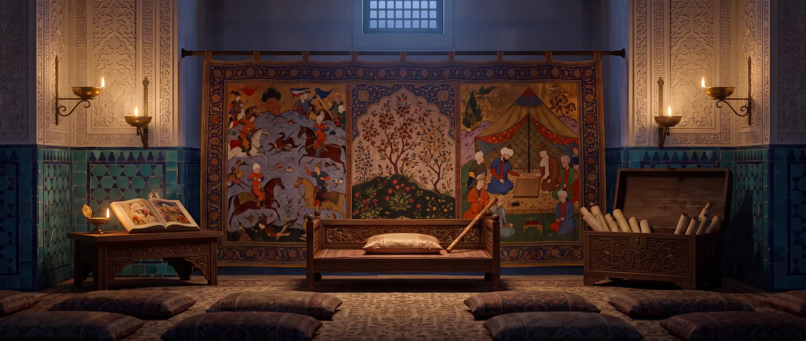

曼苏巴：古代大师的棋题
靠一连串将军和弃子取胜的摆设局面——以及被两枚车救下的迪拉拉姆传说。

曼苏巴在阿拉伯语中意为“摆设的”，即供人解答而摆出的局面。九至十世纪巴格达的大师们在棋局之外收集的象棋棋题和残局就叫这个名字。通常白方须靠一连串将军取胜，而黑方正威胁立即将死；胜法包括将死、逼和或“光王”——沙特兰兹规则承认的一切。
阿德利和苏利把曼苏巴收进自己的书中，苏利的学生拉吉拉吉还专门写了一本。现存最早含有局面的手稿写于1140年，但其中的棋题比它早两个世纪。通过阿拉伯汇编，许多棋题也进入了智者阿方索十世的《棋戏之书》（1283）和欧洲的棋题集。
迪拉拉姆
最著名的曼苏巴是“迪拉拉姆将杀”。传说一位贵人输棋后把心爱的妻子迪拉拉姆押上赌桌；在看似绝望的局面中，她喊道：“弃掉两枚车，别弃我！”白方：沙赫a4，鲁赫h1和h4，菲尔h3，马g4，兵f6和g6；黑方：沙赫g8，鲁赫b2和b8，马c4——黑方威胁一步将死。解法：1. 车h8+ 王×h8 2. 菲尔f5+（菲尔跳过己方的马，露出第二枚车的将军）王g8 3. 车h8+ 王×h8 4. g7+ 王g8 5. 马h6——将死。这个局面见于十世纪的手稿；迪拉拉姆的故事是后来才出现的。
苏利的钻石
苏利的一个残局——双方各有沙赫和费尔兹，而沙特兰兹的费尔兹只走一格——作者本人称之为“无人解出”的局面。它被称为“苏利的钻石”；正确解法直到1986年才由特级大师尤里·阿韦尔巴赫发表。帖木儿象棋的伦敦手稿中还有阿里·沙特兰吉的21个局面——在大象棋棋盘上编排的曼苏巴。